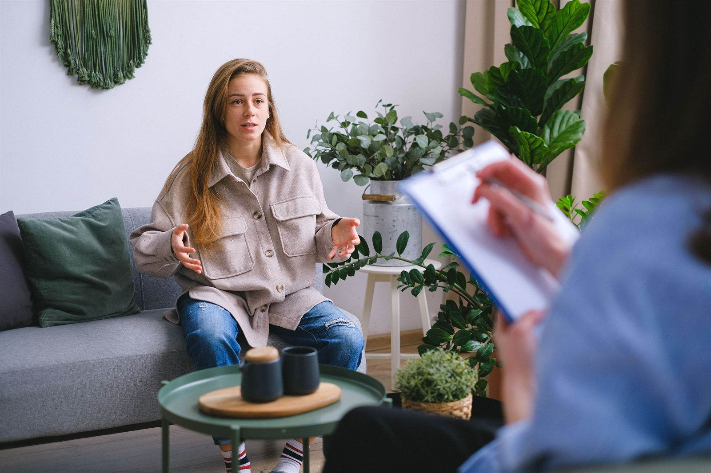

Pahami dulu, lalu putuskan langkahmu.
Bacaan singkat tentang bentuk kekerasan seksual, hak korban, dan cara saling menjaga. Ditulis berdasarkan UU No. 12 Tahun 2022 tentang Tindak Pidana Kekerasan Seksual.
-

Sembilan bentuk kekerasan seksual menurut UU TPKS
Perilaku apa saja yang diakui hukum sebagai kekerasan seksual.
-

Langkah yang bisa kamu ambil setelah kejadian
Tidak ada urutan yang wajib. Ini pilihan-pilihan yang bisa membantu, termasuk menjaga bukti.
-

Hak-hakmu sebagai korban
Penanganan, pelindungan, dan pemulihan adalah hakmu menurut UU TPKS.
-

Cara mendampingi teman yang bercerita
Apa yang sebaiknya diucapkan, dan apa yang sebaiknya tidak.
-

Memahami consent: setuju yang sesungguhnya
Diam bukan berarti iya. Persetujuan harus sadar, sukarela, dan boleh ditarik kapan pun.
-

Kekerasan seksual berbasis elektronik dan cara melindungi diri
Ancaman menyebar foto, pesan cabul, dan penguntitan daring. Begini cara mengamankan bukti dan akun.
-
Mengenali grooming sejak dini
Tanda yang sering terlewat: perhatian berlebih, hadiah, dan permintaan untuk merahasiakan.
Belum ada artikel yang cocok
Coba kata kunci lain, atau lihat semua kategori.